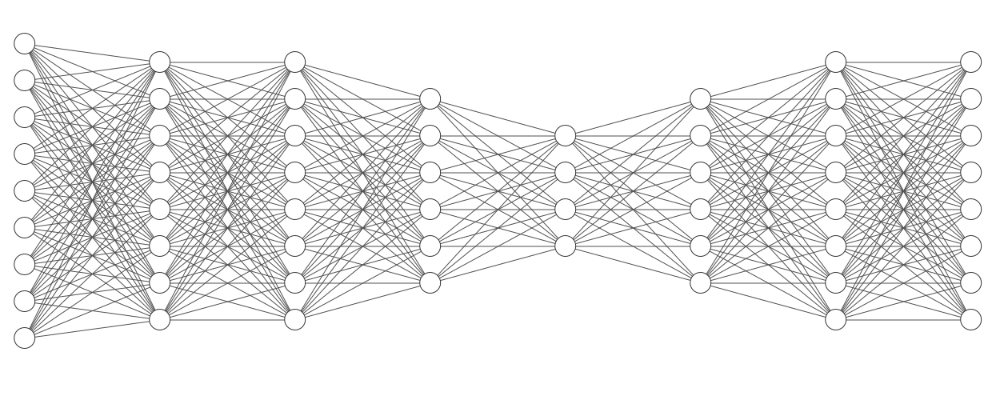

bjective
bjective
To Train a Circuit Denoising AutoEncoder
What is an AutoEncoder?
An AutoEncoder is a Neural Network that learns to reconstruct its input with just the most essential information

How do we apply it?
Quantum Circuits have a big noise problem. This causes loss of information. To correct for this we can first convert the data into its most raw information form
- 0.2345 |1⟩
- 0 |1⟩
- 1 |1⟩
- 0.4368 |1⟩
All these data points are converted into a 8-vectors and passed in
How do we apply it?
We then use 2 backends to generate the data.QASM_Simulator() NoiseModel()

900 Circuits of 4,6,8 qubits each are generated and run on the backends
Making the Model
| Input Layer: | 8+1 (8 Qubits + 1 #qubits) | 89 |
| Hidden Layer(s): | 8, 6 | 88 + 86 |
| Bottleneck: | 4 | 64 |
| Hidden Layer(s): | 6, 8 | 46 + 68 |
| Output Layer: | 8 Qubits | 88 |
| Total Parameters: | ~170 Million |

Training the Model
| Epochs: | Batch: | Optimizer: | Loss Fn: |
|---|---|---|---|
| 5000 (Early Stopping) | 8 | Adam | Modified MSE |
$ \text{Mod-MSE} = \sum_{i=1}^{n} \frac{||\ pred\ -\ ideal\ ||}{||\ noisy\ -\ ideal\ ||} $
- » Forces Loss to move linearly
- » Automatically Constraints from 0 → 1
Results
| Type | Vector | Error from Ideal |
|---|---|---|
| Noisy | .6667, .4167, .5 , .4167 | |
| Pred | .5020 , .4931 , .4918, .5116 | 1.2% |
| Ideal | .5 , .5 ,.5 , .5 | |
| --- | --- | --- |
| Noisy | .4444, .7778, .3333, .3333 | |
| Pred | 0 , 0 , 0 , 0.5 | 10% |
| Ideal | .4192, .4706, .4447, .3621 | |
| --- | --- | --- |
| Noisy | 0.4412, 0.4706, 0.5441, 0.4706, 0.3529, 0.4412, 0.2059 | |
| Pred | 0.2318, 0.4482, 0.4314, 0.4421, 0.4039, 0.4511, 0.3753 | 11% |
| Ideal | 0 , 0 , .5 , .5 , 0 , 0 ,.5 |
Results
The net average error after 3 runs of 100 random data points each was 11.6%
So it turns out model:
Obvious Fixes:
- » Tends to almost exclusively 0.5
- » Doesn't recognize anything outside of 0.5 ± 0.1
- » Works even on 5 & 7 qubits despite being trained on 4,6,8
Obvious Fixes:
- » Adding t1, t2 & depth data for each qubit
- » Adding more balanced circuits to trainset
Immidiate Future Scope
- » Adding t1, t2 & depth data for each qubit
- » Adding more balanced circuits to trainset
- » Benchmarking the same process against a Quantum AE
- » Adding more IBMQ Systems (to generalise)
- » Using new NoiseModel (now outdated by 2 yrs)